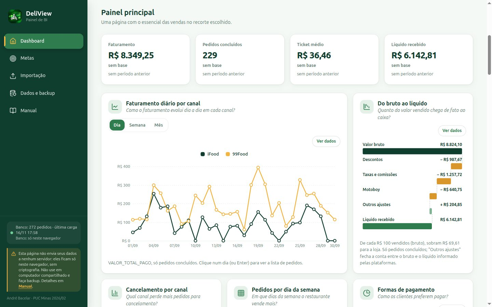
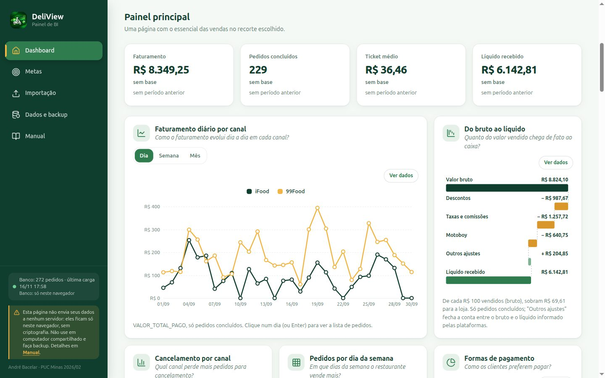
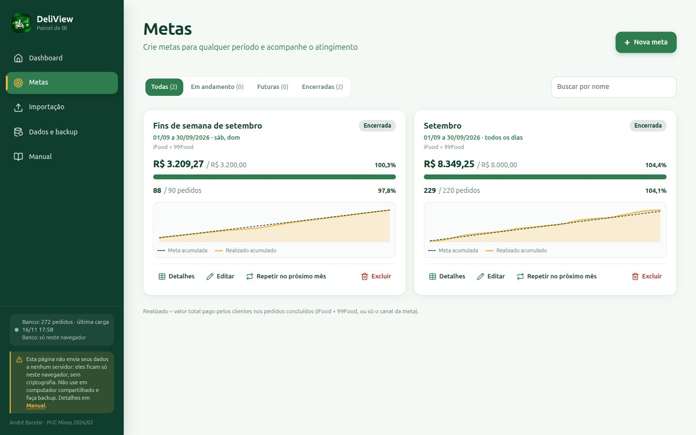
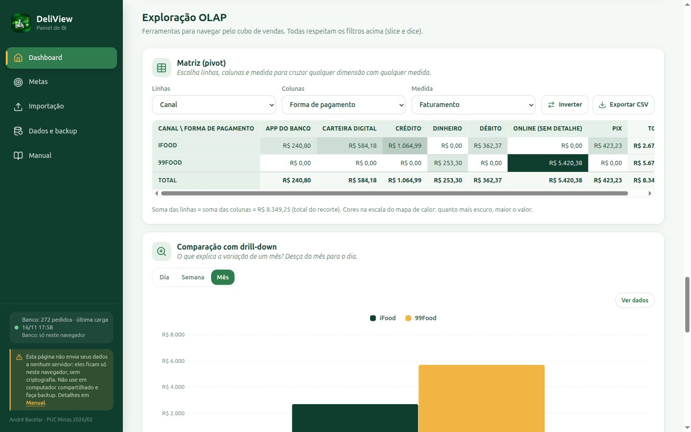

Dashboard
Faturamento dia a dia por canal, quanto de cada venda chega ao caixa depois de descontos e taxas, qual plataforma cancela mais e em que dias o restaurante vende mais.
Clique num dia do gráfico para ver os pedidos dele.
O DeliView junta os pedidos do iFood e do 99Food num painel só, confere as contas e mostra faturamento, cancelamentos, taxas e metas do restaurante. Tudo roda no navegador, sem instalar nada.

Do relatório exportado à decisão, em quatro passos.
No portal do iFood, do 99Food ou dos dois, baixe o relatório “Dados do pedido” do período que quer analisar.
Arraste as planilhas para o portal, de uma plataforma ou das duas. Ele padroniza os dados, confere as contas de cada canal e grava tudo num banco SQLite dentro do navegador.
Escolha o período no calendário, os dias da semana e o valor. A meta é distribuída por dia e comparada com o realizado.
Filtre por período, canal, pagamento e dia da semana. Gráficos, matriz OLAP e insights automáticos mostram onde agir.

Faturamento dia a dia por canal, quanto de cada venda chega ao caixa depois de descontos e taxas, qual plataforma cancela mais e em que dias o restaurante vende mais.
Clique num dia do gráfico para ver os pedidos dele.

Metas de faturamento e de pedidos para qualquer período: o mês todo, só os fins de semana ou uma promoção de dez dias.
Cada meta mostra o atingimento, a curva acumulada e quanto falta vender por dia.

Uma matriz que cruza qualquer dimensão com qualquer medida, com inversão de linhas e colunas e exportação em CSV.
O drill-down desce do mês para a semana e para o dia.
Este site entrega só o programa. As planilhas que você importa são lidas e guardadas pelo seu navegador, e de lá não saem.
Não há conta nem login. Nem quem publicou o site vê o que você importa.
A página proíbe o navegador de mandar dados para qualquer endereço, até se um arquivo malicioso for importado.
Uma cópia completa em .zip, salva onde você escolher, para restaurar em outro computador.
Os dados ficam sem criptografia no navegador. Não use o portal em computador compartilhado e, ao terminar numa máquina que não é sua, apague os dados em Dados e backup.
Duas planilhas fictícias de setembro de 2026, no mesmo formato dos relatórios reais. Nenhum número delas é de vendas de verdade.
O portal é a Etapa 7, Portal e BI, do projeto do Eixo 4 de Sistemas de Informação da PUC Minas. Ele parte do modelo dimensional e do ETL construídos nas etapas anteriores.